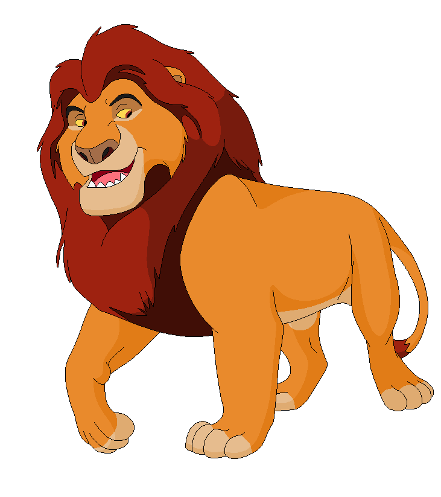
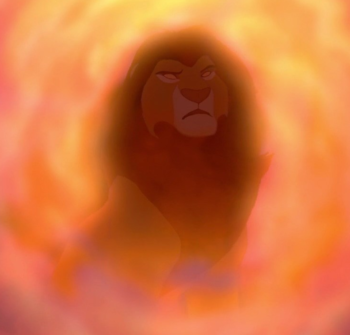
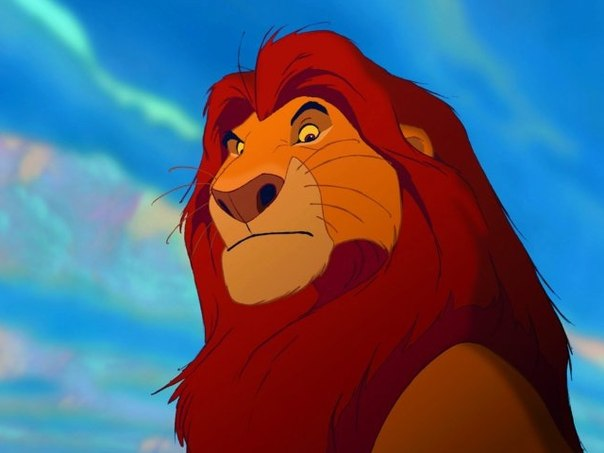
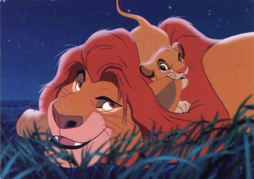

|
|
Муфаса
Навигация
Муфаса — второстепенный герой анимационного мультфильма «Король Лев»; бывший правитель Земель прайда, отец Симбы, муж Сараби и старший брат Шрама.

У Муфасы и Сараби рождается сын Симба. Когда львёнок подрастает, Муфаса начинает обучать его всему, что должен знать мудрый король: объясняет ему, что всё пребывает в гармонии, которую король должен поддерживать в балансе, рассказывает ему о том, что такое Круг Жизни.
Однажды Шрам, распланировав план устранения брата и племянника, заманивает Симбу в каньон и с помощью гиен-подручных направляет туда стадо антилоп. Но всё выходит по-другому: Муфаса бросается на помощь и вытаскивает сына на безопасный выступ, а сам падает вниз. Всё же ему удаётся выбраться из-под копыт бегущих антилоп и уцепиться за край скалы. Но когда спасение было уже близко, объявляется Шрам и сбрасывает брата прямо в стремительный поток антилоп. Муфаса погибает.



Семья
Характеристика
| Имя | Муфаса |
| Животное | лев |
| Пол | мужской |
| Грива | темно-красная |
| Тип персонажа | положительный |
| Характер | Мудрый, стремящийся, величественный, сильный, понимающий, здравомыслящий, любящий, терпеливый |
| Внешний вид | Большой мускулистый лев, золотисто-жёлтый мех, бежевые подбрюшье, нос и лапы, коричнево-рыжая грива, рубиновые глаза |
| Цель | Научить своего сына Симбу, как стать королём, править и защищать своё королевство |
| Силы и способности | Физическая сила и ловкость |
| Оружие | Клыки и когти |
| Судьба | Сброшен Шрамом в ущелье и насмерть затоптан стадом антилоп гну |
Видео
| Симба | Муфаса | Сараби | Шрам |
|
|
|||
| Все используемые материалы взяты с Википедии | Kiber One, 2019 | ||